Evaluating the Impact of Agricultural Sector Developments on Poverty Reduction in developing countries in Asia
Author
Koki Taniguchi
Introduction
Background
Many developing countries in Asia are heavily reliant on the agricultural sector as the primary source of livelihood. A significant proportion of the poor population lives in these areas, where economic activities are centered around agriculture, forestry, and fishing. Despite global efforts to reduce poverty, disparities persist, especially in rural communities. Investment in the primary sector has the potential to address poverty by improving agricultural productivity, increasing employment, and generating income. This study explores the relationship between sector-specific investments and poverty reduction to better understand the role agriculture plays in alleviating poverty in regional areas.
Research Question
How does development in the agricultural sector influence poverty reduction in rural areas where the primary sector dominates economic activity?
Research Objective
Analyze the relationship between agricultural development and poverty rates in developing countries.
Identify the extent to which development in sectors can reduce disparities in poverty.
Compare the impact of agricultural developments with developments in other sectors (e.g., manufacturing, services) to assess their effectiveness in poverty reduction.
Research Hypothesis
H₀ (Null Hypothesis): Development in the agricultural sector has no significant impact on poverty reduction in rural areas. H₁ (Alternative Hypothesis): Development in the agricultural sector significantly reduces poverty levels in rural areas where the primary sector is the dominant industry.
Employment_agriculture: Percentage working in agriculture sector
Employment_industry: Percentage working in industrial sector
Employment_service: Percentage working in service sector
GDP_Agriculture_percent: GDP percentage produced in agricultural sector
GDP_Industry_percent: GDP percentage produced in Industrial sector
GDP_Manufacture_percent: GDP percentage produced in Manufacture sector
GDP_Service_percent: GDP percentage produced in service sector
GDP_Agriculture_LF: GDP produced in agricultural sector divided by number of employee
GDP_Industry_LF: GDP produced in Industrial sector divided by number of employee
GDP_Manufacture_LF: GDP produced in manufacture sector divided by number of employee
GDP_Service_LF: GDP produced in service sector divided by number of employee
Initial Data Preprocessing
1. Data collection and integration
Show the code
# Data Importpip =read_csv("data/pip.csv") LF =read_csv("data/Employment by sector (%) .csv")Gdp =read_csv("data/ea44776a-6dd7-4f98-8db0-eb7b5ba085bb_Data.csv")GDPperCapita =read_csv("data/API_NY.GDP.PCAP.CD_DS2_en_csv_v2_31681.csv", skip =4)Industry_gdp =read_csv("data/API_NV.IND.TOTL.ZS_DS2_en_csv_v2_10685.csv", skip =4)Service_gdp =read_csv("data/API_NV.SRV.TOTL.ZS_DS2_en_csv_v2_2251.csv", skip =4) Manufacture_gdp =read_csv("data/API_NV.IND.MANF.ZS_DS2_en_csv_v2_116.csv", skip =4)Agriculture_gdp =read_csv("data/API_NV.AGR.TOTL.ZS_DS2_en_csv_v2_8070.csv", skip =4)Inflation =read_csv("data/API_FP.CPI.TOTL.ZG_DS2_en_csv_v2_31752.csv", skip =3)Unemployment =read_csv("data/API_SL.UEM.TOTL.ZS_DS2_en_csv_v2_31678.csv", skip =3)### Data Cleaning# Data Cleaning for Poverty Datapoverty = pip %>%filter(reporting_level =="national") %>%mutate(year =as.character(reporting_year),country =as.factor(country_name),Pov_headcount =as.numeric(headcount),Gini =as.numeric(gini)) %>%select(country, year, Pov_headcount, Gini)# Data Cleaning for Labor ForceLabor = LF %>%mutate(Indicator =as.factor(`Indicator Name`),Country =as.factor(`Country Name`),Rate =as.numeric(Value),Disaggregation =as.factor(`Disaggregation`)) # Data Cleaning for Labor Force in agriculrural sectoragriculture_LF = Labor %>%filter(Indicator =="Employment in agriculture (% of total employment) (modeled ILO estimate)" ) %>%mutate(Employment_agriculture = Rate) %>%select(Country, Year, Employment_agriculture) %>%rename(country =1,year =2) %>%mutate(year =as.character(year))# Data Cleaning for Labor Force in service sectorservice_LF = Labor %>%filter(Indicator =="Employment in services (% of total employment) (modeled ILO estimate)" ) %>%mutate(Employment_service = Rate) %>%select(Country, Year, Employment_service) %>%rename(country =1,year =2)%>%mutate(year =as.character(year))# Data Cleaning for Labor Force in Industrial sectorindustry_LF = Labor %>%filter(Indicator =="Employment in industry (% of total employment) (modeled ILO estimate)" ) %>%mutate(Employment_industry = Rate) %>%select(Country, Year, Employment_industry) %>%rename(country =1,year =2)%>%mutate(year =as.character(year))# Data Cleaning for GDP Datagdp = Gdp %>%pivot_longer(cols =starts_with("19") |starts_with("20"), names_to ="year", values_to ="GDP") %>%select(c(3,5,6)) %>%rename(country =1) %>%mutate(year =substring(year, 0,4)) %>%mutate(GDP =as.numeric(GDP))# Data Cleaning for GDP per Capita Datagdp_capita = GDPperCapita %>%pivot_longer(cols =starts_with("19") |starts_with("20"), names_to ="year", values_to ="GDPperCapita") %>%select(c(1,6,7)) %>%rename(country =1)# Data Cleaning for Industrial GDP Dataindustry = Industry_gdp %>%pivot_longer(cols =starts_with("19") |starts_with("20"), names_to ="year", values_to ="GDP_Industry_percent") %>%select(c(1,6,7)) %>%rename(country =1) # Data Cleaning for Agricultural GDP Dataagriculture = Agriculture_gdp %>%pivot_longer(cols =starts_with("19") |starts_with("20"), names_to ="year", values_to ="GDP_Agriculture_percent") %>%select(c(1,6,7)) %>%rename(country =1) # Data Cleaning for Service GDP Dataservice = Service_gdp %>%pivot_longer(cols =starts_with("19") |starts_with("20"), names_to ="year", values_to ="GDP_Service_percent") %>%select(c(1,6,7)) %>%rename(country =1) # Data Cleaning for Manufacture GDP Datamanufacture = Manufacture_gdp %>%pivot_longer(cols =starts_with("19") |starts_with("20"), names_to ="year", values_to ="GDP_Manufacture_percent") %>%select(c(1,6,7)) %>%rename(country =1) # Data Cleaning for Inflation Datainflation <- Inflation %>%pivot_longer(cols =starts_with("19") |starts_with("20"), names_to ="year", values_to ="Inflation") %>%mutate(Inflation =as.numeric(Inflation)) %>%select(c(1,6,7)) %>%rename(country =1) # Data Cleaning for Unemployment GDP Dataunemployment = Unemployment %>%pivot_longer(cols =starts_with("19") |starts_with("20"), names_to ="year", values_to ="Unemployment_Rate") %>%select(c(1,6,7)) %>%rename(country =1) ### Join All datajoin =full_join(poverty, gdp, by=c("country", "year")) %>%full_join(gdp_capita, by=c("country", "year")) %>%full_join(inflation, by=c("country", "year")) %>%full_join(unemployment, by=c("country", "year")) %>%full_join(agriculture_LF, by=c("country", "year")) %>%full_join(service_LF, by=c("country", "year")) %>%full_join(industry_LF, by=c("country", "year")) %>%full_join(industry, by=c("country", "year")) %>%full_join(service, by=c("country", "year")) %>%full_join(agriculture, by=c("country", "year")) %>%full_join(manufacture, by=c("country", "year")) %>%mutate(year =as.numeric(year)) %>%mutate(GDP_agriculture = GDP * GDP_Agriculture_percent /100) %>%mutate(GDP_manufacture = GDP * GDP_Manufacture_percent /100) %>%mutate(GDP_industrial = GDP * GDP_Industry_percent /100) %>%mutate(GDP_service = GDP * GDP_Service_percent /100) %>%mutate(GDP_agriculture_LF = GDP * GDP_Agriculture_percent /100* Employment_agriculture/100) %>%mutate(GDP_industrial_LF = GDP * GDP_Industry_percent /100* Employment_industry /100) %>%mutate(GDP_service_LF = GDP * GDP_Service_percent /100* Employment_service /100) %>%select(-c(GDP_agriculture, GDP_manufacture, GDP_industrial, GDP_service))# Target Countriessouth_southeast_asia =c("Bangladesh", "Bhutan", "India", "Maldives", "Nepal", "Pakistan", "Sri Lanka", "Brunei", "Indonesia","Laos", "Myanmar", "Philippines", "Thailand", "Vietnam")# cambodia has no povertydata# filter by Poor Countries in south and southeast asia and after 2010final_data = join %>%filter(country %in% south_southeast_asia) %>%filter(Pov_headcount >=0)
Dependent Variable: Poverty Headcount
The dependent variable we use is `Pov_headcount` variable while struggling with the missing data limitation that reaches to 61%. Data is obtained from World Bank.
2. Missing Values
Show the code
# calculate the percentage amount of NA relative to the dataset populationpercent_na =sum(is.na(final_data)) / (nrow(final_data) *ncol(final_data)) # calculate the total NAfull_na =sum(is.na(final_data))# visualize the missing valuesvis_miss(final_data)
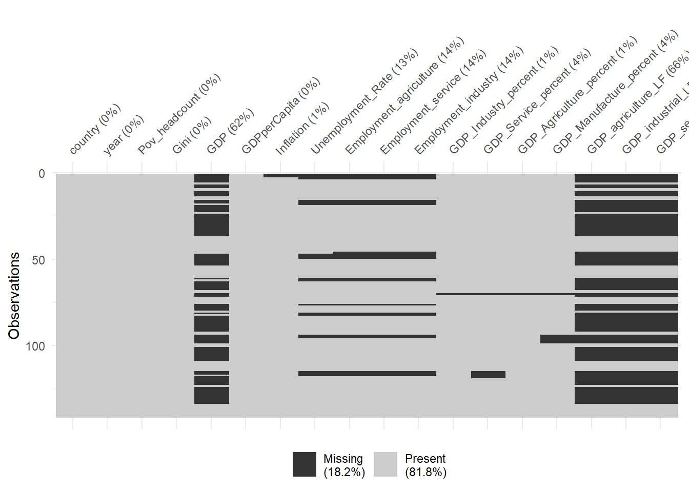
Summary Statistics for each variable
Show the code
# Print the summarykable(describe(final_data),caption ="*Full dataset summary statistics for each variable*",digits =4)
Full dataset summary statistics for each variable
vars
n
mean
sd
median
trimmed
mad
min
max
range
skew
kurtosis
se
country*
1
141
6.617000e+00
3.375700e+00
7.000000e+00
6.734500e+00
4.447800e+00
1.000000e+00
1.100000e+01
1.000000e+01
-0.1031
-1.4722
2.843000e-01
year
2
141
2.005908e+03
1.127890e+01
2.008000e+03
2.006673e+03
1.186080e+01
1.977000e+03
2.023000e+03
4.600000e+01
-0.5047
-0.7334
9.499000e-01
Pov_headcount
3
141
1.742000e-01
1.871000e-01
1.162000e-01
1.408000e-01
1.399000e-01
0.000000e+00
7.457000e-01
7.457000e-01
1.3874
1.1590
1.580000e-02
Gini
4
141
3.622000e-01
5.160000e-02
3.550000e-01
3.600000e-01
5.860000e-02
2.588000e-01
4.786000e-01
2.198000e-01
0.3165
-0.7893
4.300000e-03
GDP
5
53
7.084909e+11
8.512699e+11
3.940874e+11
5.463774e+11
4.863437e+11
2.591358e+09
3.167271e+12
3.164679e+12
1.5087
1.1710
1.169309e+11
GDPperCapita
6
141
2.318852e+03
2.045358e+03
1.659888e+03
1.997107e+03
1.587454e+03
1.505814e+02
1.134986e+04
1.119928e+04
1.5341
2.7789
1.722502e+02
Inflation
7
139
6.290800e+00
6.120700e+00
5.134200e+00
5.564500e+00
3.521300e+00
-9.004000e-01
5.845100e+01
5.935150e+01
4.8127
36.1933
5.192000e-01
Unemployment_Rate
8
122
4.116000e+00
2.787300e+00
3.770000e+00
3.865500e+00
3.155700e+00
2.490000e-01
1.227000e+01
1.202100e+01
0.7314
0.0532
2.523000e-01
Employment_agriculture
9
121
4.098490e+01
1.187780e+01
4.129500e+01
4.047470e+01
1.005350e+01
7.859000e+00
7.589700e+01
6.803800e+01
0.2652
0.8369
1.079800e+00
Employment_service
10
121
3.958990e+01
1.009890e+01
3.866600e+01
3.936000e+01
9.187700e+00
1.412800e+01
6.966800e+01
5.554000e+01
0.2788
0.6030
9.181000e-01
Employment_industry
11
121
1.942510e+01
4.190300e+00
1.999000e+01
1.969720e+01
3.785100e+00
6.658000e+00
2.760700e+01
2.094900e+01
-0.7010
0.6118
3.809000e-01
GDP_Industry_percent
12
140
3.227850e+01
8.840300e+00
3.419450e+01
3.265090e+01
8.170100e+00
9.620200e+00
4.806070e+01
3.844050e+01
-0.4293
-0.4676
7.471000e-01
GDP_Service_percent
13
136
4.821440e+01
7.968000e+00
4.791150e+01
4.804930e+01
8.441100e+00
2.481090e+01
7.792650e+01
5.311560e+01
0.3573
0.9427
6.832000e-01
GDP_Agriculture_percent
14
140
1.669460e+01
7.814700e+00
1.440880e+01
1.572410e+01
6.360100e+00
4.494000e+00
5.729880e+01
5.280480e+01
1.5928
4.3566
6.605000e-01
GDP_Manufacture_percent
15
135
1.942750e+01
7.044400e+00
1.986320e+01
1.981300e+01
8.133800e+00
2.078300e+00
3.195330e+01
2.987490e+01
-0.3383
-0.5710
6.063000e-01
GDP_agriculture_LF
16
48
4.213256e+10
6.467839e+10
1.352689e+10
2.944007e+10
1.556342e+10
2.022373e+07
2.425385e+11
2.425183e+11
1.9025
2.2035
9.335521e+09
GDP_industrial_LF
17
48
5.354041e+10
5.871016e+10
3.429307e+10
4.574000e+10
4.449273e+10
1.181289e+08
2.051238e+11
2.050057e+11
1.1023
-0.0463
8.474082e+09
GDP_service_LF
18
48
1.436783e+11
1.353392e+11
1.174547e+11
1.270765e+11
1.427098e+11
3.677882e+08
4.842498e+11
4.838820e+11
1.0206
0.1319
1.953453e+10
3. Correlation analysis with target variable
Show the code
# store a numeric only dataframe for our linear regressionnumeric_df =select(final_data, where(is.numeric)) %>%filter_all(all_vars(!is.na(.))) %>%filter_all(all_vars(is.finite(.)))# form a correlation matrixcor_matrix = numeric_df %>%cor() # identify the variable with high correlation corrplot(cor_matrix, method ="color", order ="hclust", addCoef.col ="black", tl.col ="black",tl.cex =0.5, number.cex =0.4)
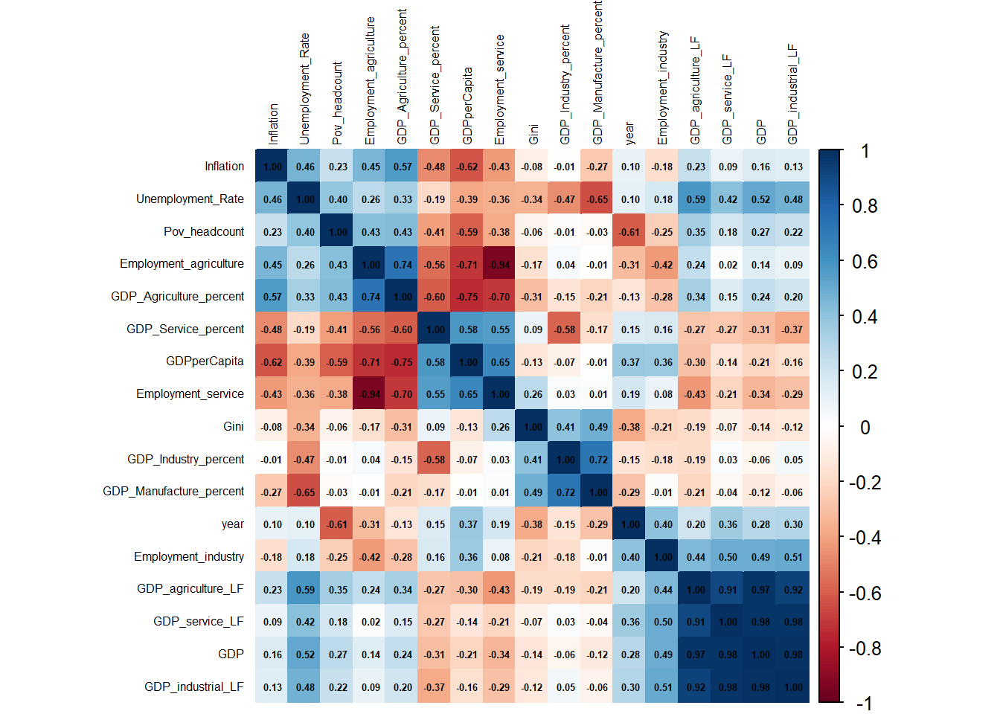
Show the code
# identify the correlated variables, setting a threshold of 0.3 correlation. (Moderate to strong correlation)correlated_variables =as.data.frame(cor_matrix) %>%select(Pov_headcount) %>%filter(Pov_headcount !=1) # these variables with the most correlation kable(correlated_variables %>%rownames_to_column() %>%arrange(desc(Pov_headcount)),caption ="*Variables with moderate to strong Correlation with Poverty Headcount*",label="*Variable*")
Variables with moderate to strong Correlation with Poverty Headcount
rowname
Pov_headcount
GDP_Agriculture_percent
0.4343261
Employment_agriculture
0.4289738
Unemployment_Rate
0.3992461
GDP_agriculture_LF
0.3454094
GDP
0.2689163
Inflation
0.2288722
GDP_industrial_LF
0.2241256
GDP_service_LF
0.1812379
GDP_Industry_percent
-0.0104379
GDP_Manufacture_percent
-0.0263870
Gini
-0.0645768
Employment_industry
-0.2456589
Employment_service
-0.3779099
GDP_Service_percent
-0.4120079
GDPperCapita
-0.5944919
year
-0.6058433
Show the code
# Melt the data framedf_melt0 <-melt(numeric_df %>%select(c(colnames(t(correlated_variables)),"Pov_headcount")), id.vars ="Pov_headcount")# Create scatterplotsscatterplots0 <-ggplot(df_melt0, aes(x = value, y = Pov_headcount)) +geom_point(alpha =0.2) +facet_wrap(~ variable, scales ="free") +labs(title ="Scatterplot Matrix Against Pov_headcount")+geom_smooth(linewidth =0.3, color ="red",linetype =2, se =FALSE)+theme_bw()print(scatterplots0)
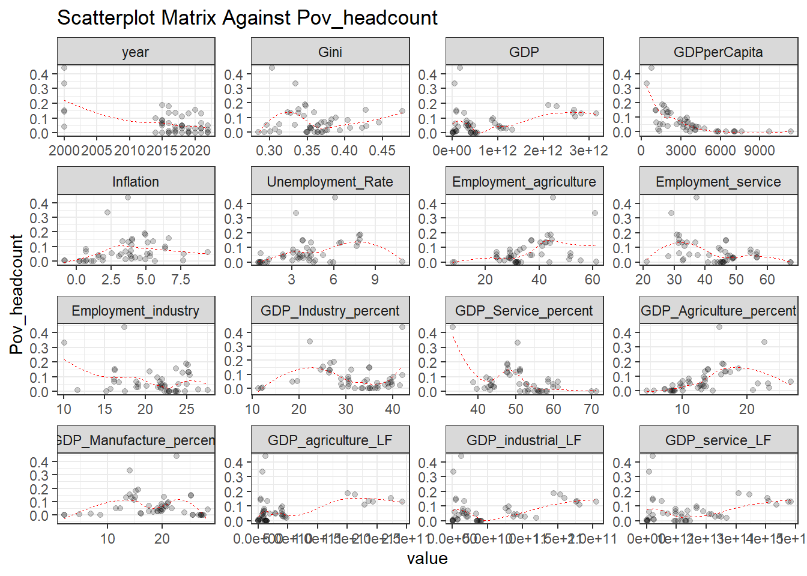
4. Data Normalization of selected input
Show the code
# Create a recipe for data preprocessing with imputationrec1 <-recipe(~ ., data = final_data) %>%step_YeoJohnson(colnames(t(correlated_variables))) # Normalize numeric predictors# Prepare the reciperec_prep1 <-prep(rec1, training = final_data)# Apply the recipe to the data (bake the recipe)normalized_final_data <-bake(rec_prep1, new_data =final_data )df_melt1 <-melt(select(normalized_final_data, where(is.numeric))%>%select(c(colnames(t(correlated_variables)),"Pov_headcount")), id.vars ="Pov_headcount")distributions1 <-ggplot(df_melt1, aes(x = value)) +geom_histogram(aes(y = ..density..), color ="black", alpha =0.5) +geom_density(color ="red", size =0.3) +facet_wrap(~ variable, scales ="free") +labs(title ="Distributions Against Poverty Headcount")+theme_bw()distributions1
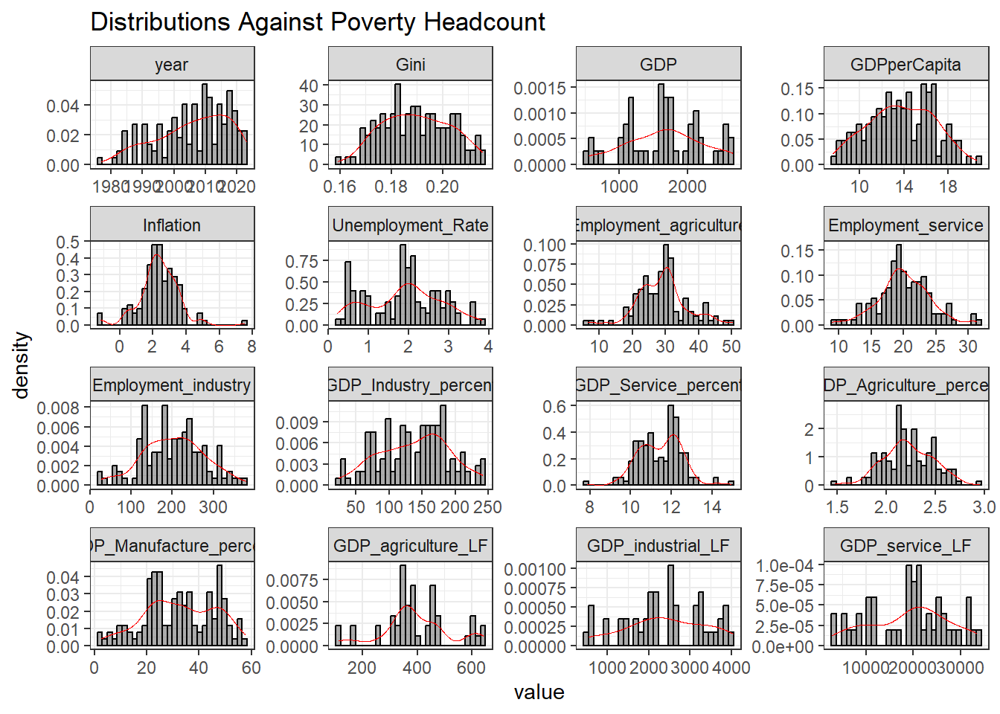
Show the code
scatterplots1 <-ggplot(df_melt1, aes(x = value, y = Pov_headcount)) +geom_point(alpha =0.2) +facet_wrap(~ variable, scales ="free") +labs(title ="Scatterplot Matrix Against Poverty Headcount")+geom_smooth(size =0.3, color ="red",linetype =2, se =FALSE)+theme_bw()print(scatterplots1)
5. Data partitioning
Show the code
# our selected dataselected_inputs =select(final_data, c("Pov_headcount",colnames(as.data.frame(t(correlated_variables)))))set.seed(123)# split data to training and testingdf_split =initial_split(selected_inputs, prop =0.7, strata = Pov_headcount)# input train and test data df_train =training(df_split) %>%na.omit()df_test =testing(df_split) %>%na.omit()
Multiple Linear Regression - Ordinary Least Squared
1. Training Multiple Linear Regression
1.1. Train and evaluate initial regression mode
Show the code
# form the formulafirst_fmla =as.formula("Pov_headcount ~ year + GDP + GDPperCapita + Gini + Inflation + GDP_Agriculture_percent + GDP_Manufacture_percent + GDP_Industry_percent + GDP_Service_percent + Unemployment_Rate + Employment_agriculture + Employment_industry + Employment_service + GDP_agriculture_LF + GDP_industrial_LF + GDP_service_LF")# formula being usedlinear_model0 =lm(first_fmla,data = df_train) # recieve resultsdf_results0 =cbind(df_train,as.data.frame(predict(linear_model0,interval ="prediction")))# model summarylinear0_summary =summary(linear_model0)modelsummary_output <-modelsummary(list(linear_model0), output ="gt",stars =TRUE,statistic =c("t = {statistic}", "se = {std.error}", 'p.value'),shape =)# Convert the gt to kableExtrakable(modelsummary_output %>%as.data.frame(),caption ="*Initial training model summary*",full_width =FALSE, position ="center")
Initial training model summary
(1)
(Intercept)
-1389.685
t = -0.906
se = 1533.575
(0.376)
year
-0.005+
t = -2.024
se = 0.002
(0.057)
GDP
0.000
t = 1.388
se = 0.000
(0.181)
GDPperCapita
0.000
t = -1.206
se = 0.000
(0.243)
Gini
-0.805*
t = -2.470
se = 0.326
(0.023)
Inflation
0.003
t = 0.733
se = 0.005
(0.473)
GDP_Agriculture_percent
-0.009
t = -1.312
se = 0.007
(0.205)
GDP_Manufacture_percent
0.010**
t = 2.906
se = 0.003
(0.009)
GDP_Industry_percent
-0.012+
t = -1.753
se = 0.007
(0.096)
GDP_Service_percent
-0.016*
t = -2.511
se = 0.007
(0.021)
Unemployment_Rate
-0.002
t = -0.110
se = 0.014
(0.913)
Employment_agriculture
14.012
t = 0.914
se = 15.322
(0.372)
Employment_industry
14.005
t = 0.914
se = 15.320
(0.372)
Employment_service
14.018
t = 0.915
se = 15.322
(0.372)
GDP_agriculture_LF
0.000
t = -0.773
se = 0.000
(0.449)
GDP_industrial_LF
0.000+
t = -1.991
se = 0.000
(0.061)
GDP_service_LF
0.000
t = -0.908
se = 0.000
(0.375)
Num.Obs.
36
R2
0.920
R2 Adj.
0.852
AIC
-132.9
BIC
-104.4
Log.Lik.
84.445
RMSE
0.02
1.2. Checking for Multicollinearity: Variance of Influence (VIF)
Show the code
# form a VIF plot VIF_linear_0 =as.data.frame(vif(linear_model0)) %>%rownames_to_column() %>%ggplot(aes(x = rowname, y =vif(linear_model0)))+geom_col()+coord_flip() +geom_hline(yintercept =5, linetype =2, color ='blue')+labs(title ="VIF Values of Predictor Variables", x=NULL, y ='VIF values') +theme_bw()+theme(axis.text.y =element_text(size =12)) VIF_linear_0
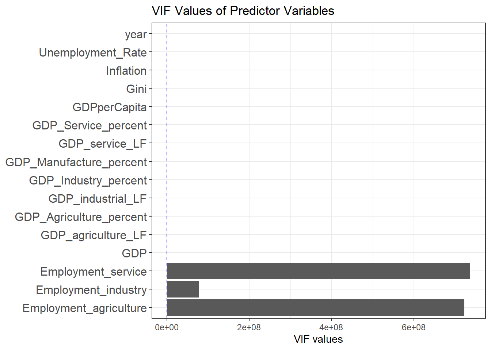
Since the three variables “Employment_service”, “Employment_industry”, and “Employment_agriculture” have high multicolinearities, they should be removed from the dataset.
Show the code
# form the formulasecond_fmla =as.formula("Pov_headcount ~ year + GDP + GDPperCapita + Gini + Inflation + GDP_Agriculture_percent + GDP_Manufacture_percent + GDP_Industry_percent + GDP_Service_percent + Unemployment_Rate + GDP_agriculture_LF + GDP_industrial_LF + GDP_service_LF")# formula being usedlinear_model1 =lm(second_fmla,# dataset being useddata = df_train) # recieve resultsdf_results1 =cbind(df_train,as.data.frame(predict(linear_model1,interval ="prediction")))# recieve residualsdf_results1$residuals = linear_model1$residuals# model summarylinear1_summary =summary(linear_model1)
1.3. Training model evaluation after adjusting for multicolinearity
We’ve eventually arrive to this initial final model after adjusting for multicollinearity.
1.4. Prediction vs actual plot
Show the code
# plot the predictionr_squared_linear1 =ggplot(df_results1, aes(x = fit, Pov_headcount)) +geom_point(alpha =0.4) +geom_abline(color ='blue', linetype =2) +coord_obs_pred()+ggtitle("Predicted vs Actual Poverty Headcount", label ="Training Model using Linear Regression") +theme_bw() +xlab("Predicted Poverty Headcount")+ylab("Actual Poverty Headcount") +annotate("label", x =0.3, y =0.5,label =paste0("R-squared:", round(linear1_summary$r.squared,2)))r_squared_linear1
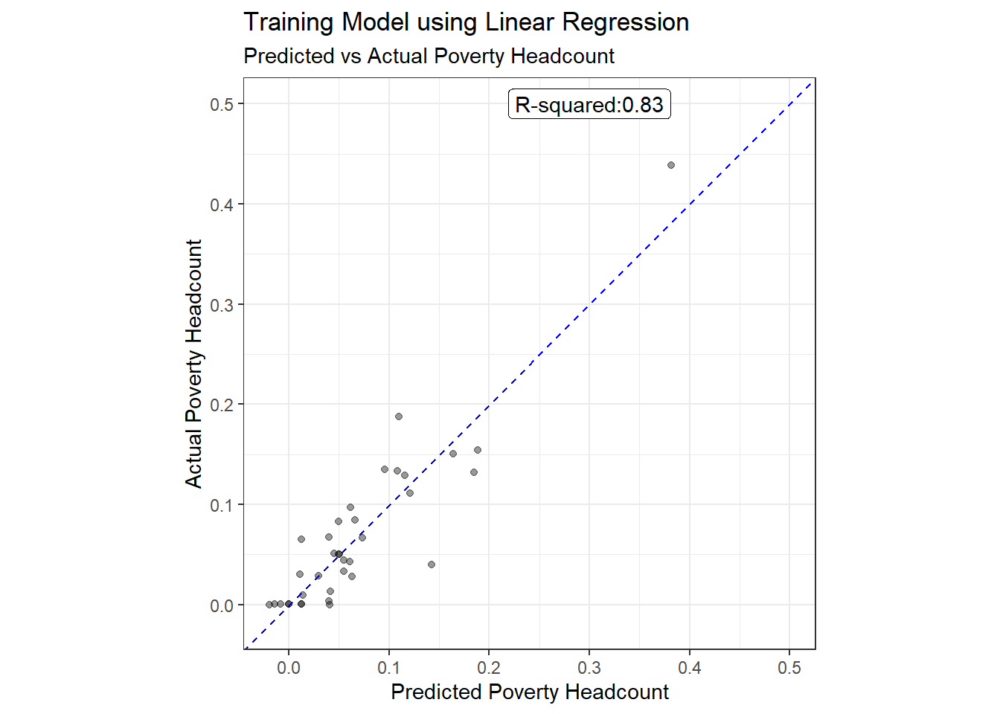
1.5. Residuals diagnostics
Show the code
# form a residual histogram plotresidual_linear1 =ggplot(df_results1, aes(x = residuals)) +geom_histogram(aes(y = ..density..), color ="black", alpha =0.5) +geom_density(color ="red", size =0.5) +labs(title ="Histogram of Residuals",x ="Residuals",y ="Density") +geom_vline(xintercept =mean(df_results1$residuals), linetype =2, color ="blue") +geom_vline(xintercept =median(df_results1$residuals), linetype =2, color ="darkgreen") +annotate("text",x =-1.5, y =0.17, label =paste0("Mean: ", round(mean(df_results1$residuals),2)), color ="blue" ) +annotate("text",x =2.3, y =0.20, label =paste0("Median: ", round(median(df_results1$residuals),2)), color ="darkgreen" ) +xlim(-1,1) +ylim(0, 8) +theme_bw() +ylab(NULL)# lm model, uses ordinary least squares regession to fit a straight lineresidual_fit1 =ggplot(df_results1, aes(x = fit, y = residuals))+geom_point(alpha=0.5) +geom_smooth(method ="loess", color ='red', size =0.3, se =FALSE) +theme_bw() +ggtitle("Residual plot ")# qq plotqq_plot1 =ggplot(df_results1, aes(sample = residuals)) +stat_qq() +stat_qq_line(color ="blue") +labs(title ="Q-Q Plot ", x ="Theoretical Quantiles", y ="Sample Quantiles")+theme_bw() residual_linear1 + ( qq_plot1/ residual_fit1 )
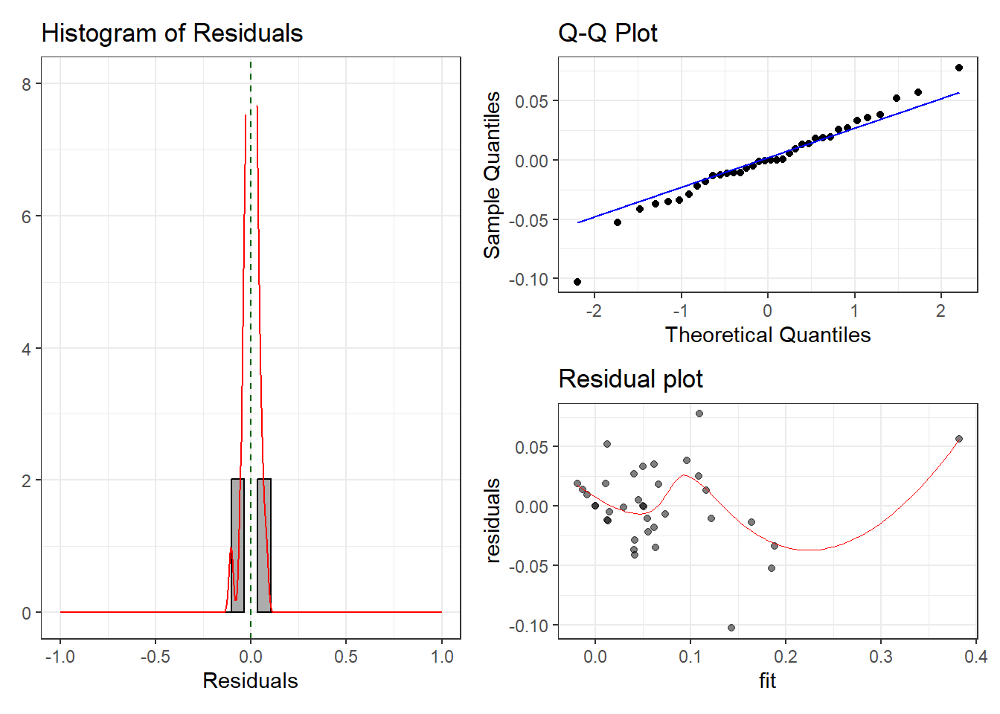
1. Histogram of Residuals
Distribution and Normality: The residuals appear to be centered around zero, suggesting that the model is unbiased. While most residuals are concentrated near the center, there are some long tails on the left side, indicating the possibility of outliers or slight deviation from normality.
Symmetry: Although the distribution is close to symmetric, the longer left tail hints at potential skewness that may require further investigation, especially if these outliers affect model performance.
2. Q-Q Plot
Normality Check: Most of the points align along the 45-degree line, suggesting that the residuals generally follow a normal distribution. However, some deviations occur at the extremes, indicating the possibility of outliers or slight non-normal behavior in the tails.
Impact of Outliers: These deviations, especially at the lower and upper quantiles, could affect model reliability if not addressed, though they appear minor in this plot.
3. Residual Plot (Residuals vs. Fitted Values)
Random Distribution: The residuals are scattered randomly, without any clear trend or pattern, which indicates that the model fits the data well and there are no obvious misspecifications in the relationship between predictors and the response variable.
Homoscedasticity: The residuals seem to have a relatively consistent spread across the range of fitted values, suggesting no signs of heteroscedasticity (variance of residuals remains fairly constant).
Minor Curvature: There is a slight curvature visible in the low-to-mid range of fitted values. This could indicate that some non-linearity might exist, but it seems small enough that the overall model still captures the primary relationship adequately.
2. K-fold Cross-validation
2.1. Cross-validation performance evaluation
Show the code
# Specify a modellm_model0 <-linear_reg() %>%set_engine("lm")# Create a recipe for data preprocessingrec <-recipe(second_fmla, data = df_train) # Create a workflowwf <-workflow() %>%add_recipe(rec) %>%add_model(lm_model0)# Create 10-fold cross-validation resamplesset.seed(123) # For reproducibilityfolds <-vfold_cv(df_train, v =10)# Perform cross-validationresults <- wf %>%fit_resamples(resamples = folds,metrics =metric_set(rmse, rsq),control =control_resamples(save_pred =TRUE) )# Collect and summarize metricsmetrics_cv = results %>%collect_metrics()# Visualize results lm_cv_predictions = results %>%collect_predictions()# Function to fit model and extract AIC/BICextract_aic_bic <-function(split) { train_data <-analysis(split) mod_fit <-lm(Pov_headcount ~ ., data = train_data) aic <-AIC(mod_fit) bic <-BIC(mod_fit)tibble(id = split$id,AIC = aic,BIC = bic )}aic_bic_results <- folds %>%mutate(results =map(splits, extract_aic_bic)) %>%select(id, results) %>%unnest(cols = results, names_repair ="unique")# Summarize the resultsaic_bic_summary <- aic_bic_results %>%summarise(mean_AIC =mean(AIC),mean_BIC =mean(BIC) )# collect cv metricslm_cv_metrics = metrics_cv %>%transmute(metric = .metric, lm_crossvalidate = mean,) # calculate residuals lm_cv_residuals = lm_cv_predictions$.pred - lm_cv_predictions$Pov_headcount# Calculate MAEmae_cv <-mean(abs(lm_cv_residuals))# Calculate MSEmse_cv <-mean((lm_cv_residuals)^2)lm_cv_metrics = lm_cv_metrics %>%full_join(data.frame(metric =c("mae", "mse", "aic", "bic"),lm_crossvalidate =c(mae_cv, mse_cv, aic_bic_summary$mean_AIC, aic_bic_summary$mean_BIC)), by =c("lm_crossvalidate", "metric"))# combine all metrics in linear modeltrain_metrics_lm =full_join(lm_train_metrics, lm_cv_metrics,by ="metric")kable(train_metrics_lm,caption ="*Train and Cross-validation performance metrics*")
Train and Cross-validation performance metrics
metric
lm_train
lm_crossvalidate
rmse
0.0333120
0.0922748
rsq
0.8344454
0.3970362
mae
0.0246942
0.0643382
mse
0.0011097
0.0145805
aic
-112.7686444
-122.5038953
bic
-89.0158603
-95.8990931
2.2. Prediction vs Actual Plot
Show the code
lm_cv_predictions%>%ggplot(aes(x = .pred, y = Pov_headcount)) +geom_point(alpha =0.4) +geom_abline(linetype =2, color ="blue") +ggtitle("Predicted vs Actual Poverty Headcount", label ="K-Fold Cross-validation resamples for Linear Regression") +coord_obs_pred()+theme_bw()+xlab("Predicted Poverty Headcount")+ylab("Actual Poverty Headcount") +annotate("label", x =0.6, y =1,label =paste0("R-squared:", round(metrics_cv$mean[2],2)))
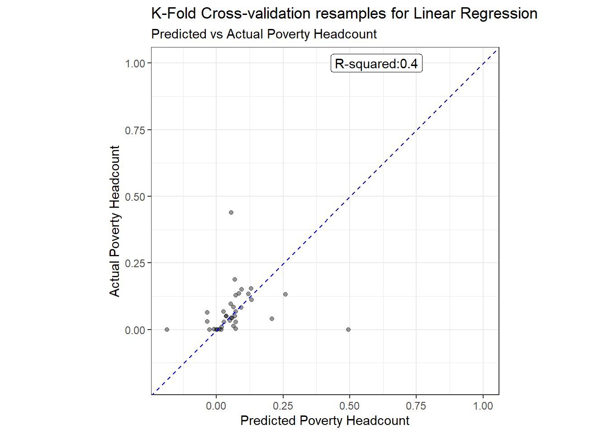
We’ve reached our optimum OLS linear model, the R-squared seems to reach 0.4 even with cross-validation testing.
2.3. Residual Diagnostic
Show the code
df_cv_resid =data.frame("residuals"= lm_cv_residuals,fit = df_train$Pov_headcount)# form a residual histogram plotresidual_linear_cv =ggplot(df_cv_resid, aes(x = residuals)) +geom_histogram(aes(y = ..density..), color ="black", alpha =0.5) +geom_density(color ="red", size =0.5) +labs(title ="Histogram of Residuals",x ="Residuals",y ="Density") +geom_vline(xintercept =mean(df_cv_resid$residuals), linetype =2, color ="blue") +geom_vline(xintercept =median(df_cv_resid$residuals), linetype =2, color ="darkgreen") +annotate("text",x =-1.5, y =0.17, label =paste0("Mean: ", round(mean(df_cv_resid$residuals),2)), color ="blue" ) +annotate("text",x =2.3, y =0.20, label =paste0("Median: ", round(median(df_cv_resid$residuals),2)), color ="darkgreen" ) +xlim(-1,1) +ylim(0, 8) +theme_bw() +ylab(NULL)# lm model, uses ordinary least squares regession to fit a straight lineresidual_fit_cv =ggplot(df_cv_resid, aes(x = fit, y = residuals))+geom_point(alpha=0.5) +geom_smooth(method ="loess", color ='red', size =0.3, se =FALSE) +theme_bw() +ggtitle("Residual plot ")# qq plotqq_plot_cv =ggplot(df_cv_resid, aes(sample = residuals)) +stat_qq() +stat_qq_line(color ="blue") +labs(title ="Q-Q Plot ", x ="Theoretical Quantiles", y ="Sample Quantiles")+theme_bw() residual_linear_cv + ( qq_plot_cv/ residual_fit_cv )
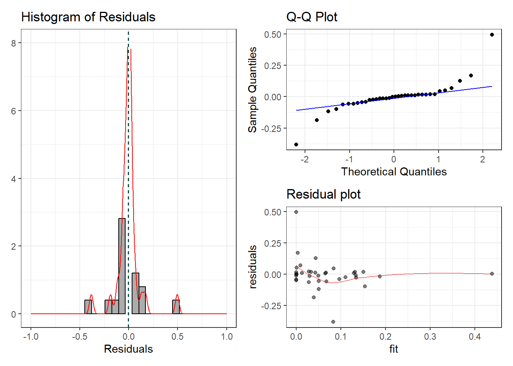
1. Histogram of Residuals
Distribution and Symmetry: The residuals are symmetrically distributed around zero, indicating no noticeable bias in the model. However, the frequency is very high near the center, with a few outliers at both ends.
Potential Outliers: Some residuals fall far from zero, suggesting potential outliers, though they appear to be rare and likely don’t have a major impact on the model’s overall performance.
2. Q-Q Plot
Normality Check: Most of the points lie along the 45-degree line, confirming that the residuals approximately follow a normal distribution. However, there are slight deviations at extreme values, both at the lower and upper ends.
Impact of Outliers: These deviations suggest that a few data points may not fit the normality assumption perfectly, and further investigation is recommended to see if these points affect the model’s accuracy.
3. Residual Plot (Residuals vs. Fitted Values)
Random Distribution: The residuals are scattered randomly without any distinct pattern, indicating that the model captures the main relationship between the predictors and the response variable.
Homoscedasticity (Constant Variance): The residuals display a fairly consistent spread across fitted values, meaning there are no signs of heteroscedasticity (non-constant variance).
Slight Non-linearity: There is minor curvature visible, suggesting some small degree of non-linearity, but it seems minimal and unlikely to affect the model’s overall fit.
3. Prediction and Evaluation
3.1. Testing performance evaluation
Show the code
# Predict on the test datasetmodel_fit0 <- wf %>%fit(data = df_train)test_predictions0 <- model_fit0 %>%predict(new_data = df_test) %>%bind_cols(df_test)# get residuals test_predictions0 <- test_predictions0 %>%mutate(residuals = Pov_headcount - .pred)metrics0 <- test_predictions0 %>%metrics(truth = Pov_headcount, estimate = .pred)# collect testing metrics# get msemse_testing <-data.frame(metric ="mse",lm_testing =mean((test_predictions0$residuals)^2))# make test metrics lm_test_metrics = metrics0 %>%transmute(metric = .metric, lm_testing = .estimate) %>%full_join(mse_testing)# combine all metrics in linear modeljoined_metrics_lm =full_join(lm_train_metrics, lm_cv_metrics,by ="metric") %>%inner_join(lm_test_metrics)# Summary statistics of the test datasetkable(model_fit0 %>%extract_fit_parsnip() %>%tidy(),caption ="*Testing model summary*")
Testing model summary
term
estimate
std.error
statistic
p.value
(Intercept)
22.1505325
5.1316394
4.3164632
0.0002785
year
-0.0105889
0.0025546
-4.1451028
0.0004233
GDP
0.0000000
0.0000000
-0.3766016
0.7100775
GDPperCapita
-0.0000078
0.0000119
-0.6531840
0.5204062
Gini
-0.8759785
0.4163397
-2.1039997
0.0470331
Inflation
0.0013697
0.0058369
0.2346616
0.8166416
GDP_Agriculture_percent
-0.0089425
0.0060853
-1.4695359
0.1558439
GDP_Manufacture_percent
-0.0001105
0.0032734
-0.0337666
0.9733677
GDP_Industry_percent
-0.0000674
0.0049590
-0.0135819
0.9892860
GDP_Service_percent
-0.0068579
0.0053051
-1.2926971
0.2095280
Unemployment_Rate
0.0095638
0.0117497
0.8139562
0.4243929
GDP_agriculture_LF
0.0000000
0.0000000
0.6793653
0.5039922
GDP_industrial_LF
0.0000000
0.0000000
-0.7787865
0.4444021
GDP_service_LF
0.0000000
0.0000000
1.5582924
0.1334342
The testing model summary explores the relationships between key predictors and the dependent variable. Year (estimate = -0.0106, p < 0.001) shows a negative and significant impact, suggesting that the dependent variable has been decreasing slightly over time. Gini coefficient (estimate = -0.876, p ≈ 0.047) is also significant, indicating that greater income inequality is associated with lower outcomes for the dependent variable.
Meanwhile, GDP per capita (estimate = -0.000008, p > 0.5) and Inflation (estimate = 0.0014, p > 0.8) are not significant predictors, implying that economic indicators and price stability do not have a meaningful effect. Similarly, sectoral GDP contributions — such as agriculture, manufacturing, industry, and services — show no significant influence (all p-values > 0.1), suggesting these factors alone do not strongly affect the target outcome.
The unemployment rate (estimate = 0.0096, p > 0.4) shows a weak positive relationship but remains statistically insignificant. Labor force participation in agriculture, industry, and services also has no significant impact (all p-values > 0.1).
These results suggest that income inequality (Gini) and time trends (year) are the most influential predictors, while other economic indicators, such as GDP contributions and unemployment, show limited relevance in explaining the variation in the target outcome. This aligns with the notion that inequality and time-driven shifts play key roles, while broader macroeconomic variables may have more indirect or nuanced effects.
3.2. Overall OLS regression’s performance metrics
Show the code
kable(joined_metrics_lm,caption ="*Multiple Linear Regression's perfomance metrics*")
Multiple Linear Regression’s perfomance metrics
metric
lm_train
lm_crossvalidate
lm_testing
rmse
0.0333120
0.0922748
0.0610786
rsq
0.8344454
0.3970362
0.7363230
mae
0.0246942
0.0643382
0.0461560
mse
0.0011097
0.0145805
0.0037306
3.3. Prediction vs actual plot
Show the code
test_predictions0 %>%ggplot(aes(x = .pred, y = Pov_headcount)) +geom_point(alpha =0.4) +geom_abline(linetype =2, color ="blue") +ggtitle("Predicted vs Actual Poverty Headcount", label ="Linear Regression Testing set") +coord_obs_pred()+theme_bw()+xlab("Predicted Poverty Headcount")+ylab("Actual Poverty Headcount") +annotate("label", x =0.6, y =1,label =paste0("R-squared:", round(metrics0$.estimate[2],2)))
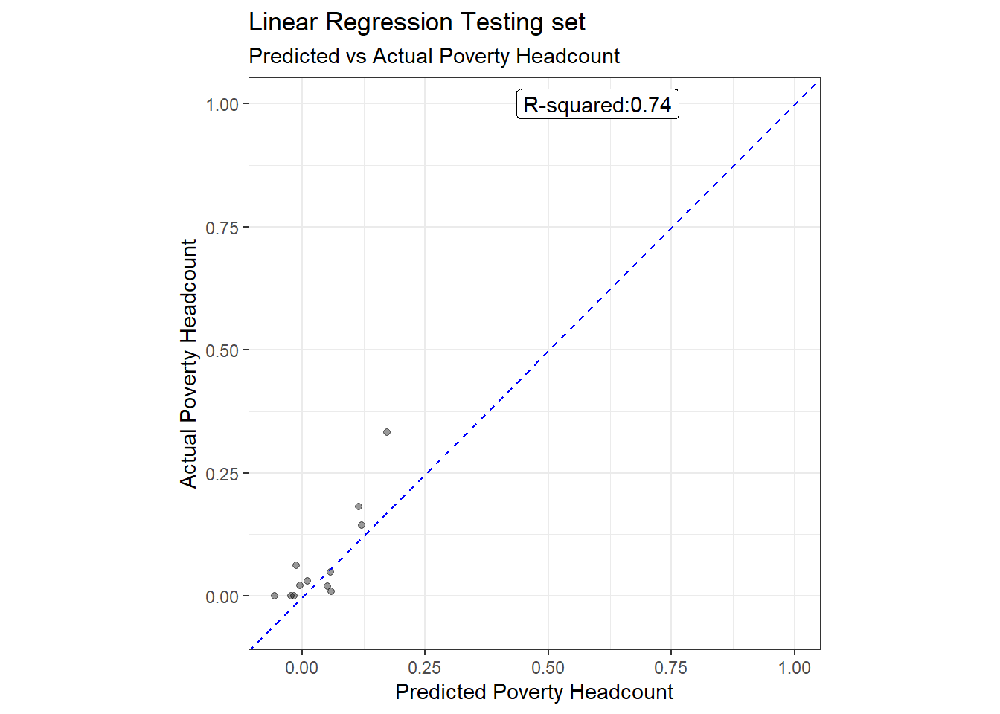
3.4. Residual Diagnostic of testing data
Show the code
# form a residual histogram plothistogram_linear_test =ggplot(test_predictions0, aes(x = residuals)) +geom_histogram(aes(y = ..density..), color ="black", alpha =0.5) +geom_density(color ="red", size =0.5) +labs(title ="Histogram of Residuals",x ="Residuals",y ="Density") +geom_vline(xintercept =mean(test_predictions0$residuals), linetype =2, color ="blue")+geom_vline(xintercept =median(test_predictions0$residuals), linetype =2, color ="darkgreen")+annotate("text",x =-1.5, y =0.17, label =paste0("Mean: ", round(mean(test_predictions0$residuals),2)), color ="blue" )+annotate("text",x =2.3, y =0.20, label =paste0("Median: ", round(median(test_predictions0$residuals),2)), color ="darkgreen" )+xlim(-0.5, 0.5)+ylim(0, 10)+theme_bw()+ylab(NULL)# lm model, uses ordinary least squares regession to fit a straight lineresidual_fit_test_linear =ggplot(test_predictions0, aes(x = Pov_headcount, y = residuals))+geom_point(alpha=0.5) +geom_smooth(method ="loess", color ='red', size =0.3, se =FALSE) +theme_bw()+labs(title ="fit vs residuals")qq_linear_test =ggplot(test_predictions0, aes(sample = residuals)) +stat_qq() +stat_qq_line(color ="blue") +labs(title ="Q-Q Plot", x ="Theoretical Quantiles", y ="Sample Quantiles")+theme_bw()# plot histogram_linear_test + (qq_linear_test/residual_fit_test_linear)
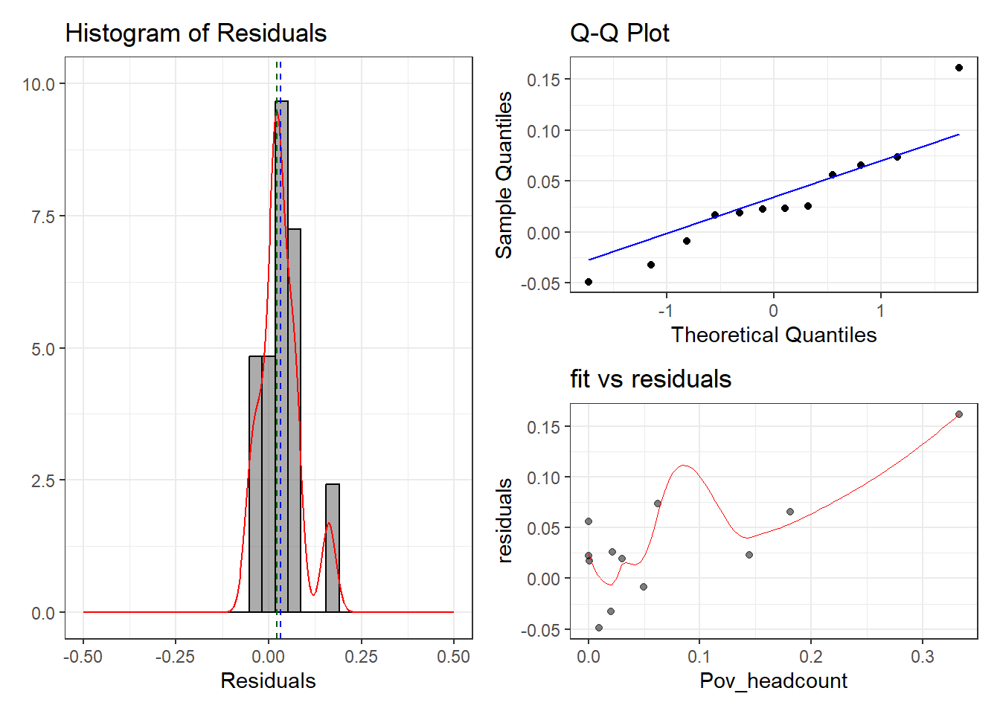
Regularized Regression : L2 and Elastic Net
Since there is severe multicollinearity in the original selected input, we had to delete 3 variables from the selected input even though we still believe those inputs are still useful. Hence, we could’ve capture important information that can better predict Pov_headcount. Therefore, we decided to use Ridge Regression because we wanted to keep all selected variables. We will assign them different weightage and penalty.
We wanted to find the optimal values of lambda. We do this by using 10 fold cross validation
1. Further preprocessing: Standardization
Show the code
# standardize the train variableblueprint =recipe(Pov_headcount ~ ., data = df_train)%>%step_center(all_numeric(), -all_outcomes()) %>%step_scale(all_numeric(), -all_outcomes())prepare <-prep(blueprint, training = df_train)ridge_train <-bake(prepare, new_data = df_train)# standardize the test variableblueprint_test =recipe(Pov_headcount ~ ., data = df_test)%>%step_center(all_numeric(), -all_outcomes()) %>%step_scale(all_numeric(), -all_outcomes())prepare_test <-prep(blueprint, training = df_test)ridge_test <-bake(prepare, new_data = df_test)X_test <-model.matrix(Pov_headcount ~ ., ridge_test)[, -1]# transform y with log transformationY_test <- ridge_test$Pov_headcountX <-model.matrix(Pov_headcount ~ ., ridge_train)[, -1]# transform y with log transformationY <- ridge_train$Pov_headcountX %>%summary()
year Gini GDP GDPperCapita
Min. :-2.9558 Min. :-2.06168 Min. :-0.9202 Min. :-1.41323
1st Qu.:-0.2227 1st Qu.:-0.61040 1st Qu.:-0.6038 1st Qu.:-0.79826
Median : 0.1417 Median : 0.03014 Median :-0.4463 Median :-0.09848
Mean : 0.0000 Mean : 0.00000 Mean : 0.0000 Mean : 0.00000
3rd Qu.: 0.5061 3rd Qu.: 0.44773 3rd Qu.: 0.2248 3rd Qu.: 0.26630
Max. : 1.0528 Max. : 2.30780 Max. : 2.5517 Max. : 3.07042
Inflation Unemployment_Rate Employment_agriculture
Min. :-1.94720 Min. :-1.50509 Min. :-2.7647
1st Qu.:-0.82842 1st Qu.:-0.54694 1st Qu.:-0.5806
Median : 0.08324 Median :-0.03213 Median :-0.2555
Mean : 0.00000 Mean : 0.00000 Mean : 0.0000
3rd Qu.: 0.78906 3rd Qu.: 0.65619 3rd Qu.: 0.7244
Max. : 1.92433 Max. : 2.76362 Max. : 2.8220
Employment_service Employment_industry GDP_Industry_percent
Min. :-2.3425 Min. :-2.0981 Min. :-2.7999
1st Qu.:-0.7475 1st Qu.:-0.6095 1st Qu.:-0.4657
Median : 0.1523 Median : 0.1227 Median : 0.1040
Mean : 0.0000 Mean : 0.0000 Mean : 0.0000
3rd Qu.: 0.4908 3rd Qu.: 0.6401 3rd Qu.: 0.7032
Max. : 2.5162 Max. : 1.8734 Max. : 1.3585
GDP_Service_percent GDP_Agriculture_percent GDP_Manufacture_percent
Min. :-2.53750 Min. :-1.7257 Min. :-2.7578
1st Qu.:-0.63223 1st Qu.:-0.7755 1st Qu.:-0.5817
Median :-0.01836 Median : 0.1001 Median : 0.1384
Mean : 0.00000 Mean : 0.0000 Mean : 0.0000
3rd Qu.: 0.67279 3rd Qu.: 0.5818 3rd Qu.: 0.4842
Max. : 2.62905 Max. : 2.6524 Max. : 1.5242
GDP_agriculture_LF GDP_industrial_LF GDP_service_LF
Min. :-0.68500 Min. :-0.9964 Min. :-1.1459
1st Qu.:-0.55213 1st Qu.:-0.7518 1st Qu.:-0.7624
Median :-0.48647 Median :-0.4167 Median :-0.3055
Mean : 0.00000 Mean : 0.0000 Mean : 0.0000
3rd Qu.:-0.09741 3rd Qu.: 0.4788 3rd Qu.: 0.4335
Max. : 2.79801 Max. : 2.4023 Max. : 2.3294
1. Histogram of Residuals
Distribution and Symmetry: The residuals are centered around zero, indicating that the model’s predictions are unbiased. The majority of residuals are concentrated near 0, with fewer extreme values, suggesting the model’s errors are small and mostly symmetric.
Potential Skewness and Outliers: There is a small peak on the right side (around 0.15 to 0.25), hinting at some outliers or slight skewness. While most residuals fit well, these extreme values may need further investigation to assess if they influence model performance.
2. Q-Q Plot
Normality Check: The Q-Q plot shows that most points follow the 45-degree line, indicating that the residuals generally follow a normal distribution. However, at both the lower and upper ends, there are deviations from the theoretical quantiles. This suggests that some residuals at the extremes do not conform perfectly to normality, possibly due to outliers.
3. Residuals vs. Fitted Values Plot (fit vs residuals)
Random Distribution and Patterns: The plot shows residuals that are mostly random but with a slight non-linear pattern. A curve appears in the red trend line, suggesting that the model might not fully capture some non-linear relationships in the data.
Homoscedasticity (Variance Check): The residual spread is relatively consistent for lower fitted values but becomes more variable at higher fitted values (around 0.3). This increase in variability might indicate mild heteroscedasticity, meaning the residual variance changes slightly across fitted values.
2. Ridge Regression Training and Evaluation
2.1 Regularization path plot
Show the code
ridge <-glmnet(x = X,y = Y,alpha =0) # a = ridge plot(ridge, main ="Ridge penalty\n")
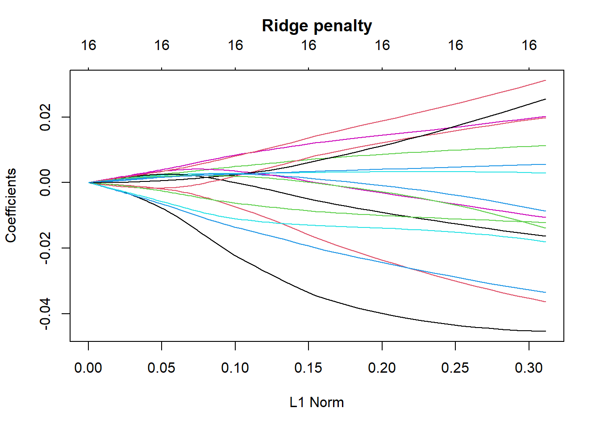
This plot illustrates how the coefficients change as the ridge regularization strength increases (moving right along the x-axis). As the L1 norm increases (associated with increasing regularization), coefficients shrink closer to zero, demonstrating the effect of ridge regression. Unlike LASSO regression, where some coefficients may become exactly zero, ridge regression retains all coefficients, meaning that every predictor variable continues to contribute to the model to some degree, albeit with reduced influence.
The horizontal spread of the coefficients shows that the model’s sensitivity to individual predictors is reduced as regularization increases. This helps prevent overfitting by controlling the impact of predictors that may otherwise dominate the model, particularly when dealing with multicollinearity or when the number of predictors is large compared to observations.
At higher levels of regularization (right side of the plot), the coefficients converge toward smaller absolute values but remain non-zero. This makes ridge regression especially useful for models with correlated predictors, as it ensures all variables contribute while maintaining the model’s robustness and prediction stability.
2.2. Cross-validation to search optimal lambda
Show the code
# cross validation ridge regressionridge_cv <-cv.glmnet(x = X,y = Y,alpha =0,type.measure ="mse")plot(ridge, main ="Ridge penalty\n")abline(v = ridge_cv$lambda.min, col ="red", lty ="dashed")abline(v = ridge_cv$lambda.1se, col ="blue", lty ="dashed")
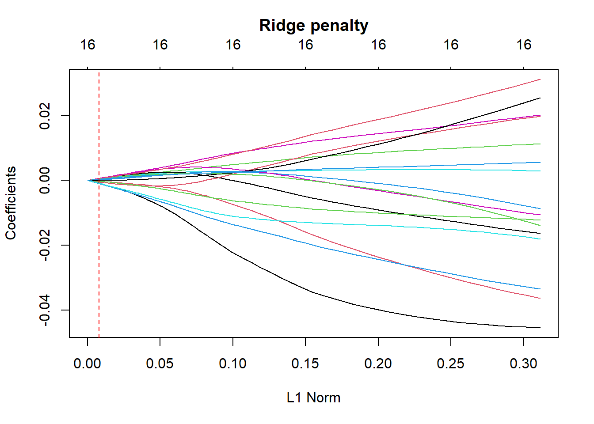
2.3. Cross-validation plot
Show the code
# we will be using MSE to compare models plot(ridge_cv, main ="Ridge penalty\n\n")
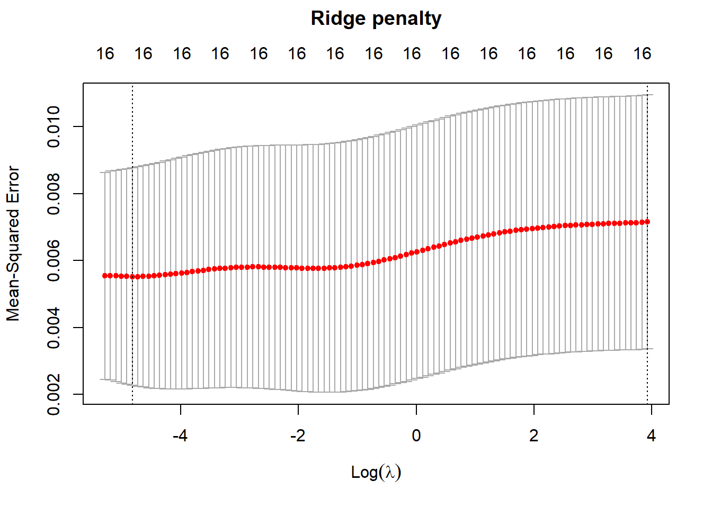
2.4. Cross-validation results
Show the code
ridge_cv
Call: cv.glmnet(x = X, y = Y, type.measure = "mse", alpha = 0)
Measure: Mean-Squared Error
Lambda Index Measure SE Nonzero
min 0.01 95 0.005522 0.003249 16
1se 50.55 1 0.007160 0.003788 16
The 10-fold cross-validation Mean Squared Error (MSE) for a ridge model is depicted in a plot. The first vertical dotted line indicates the value of λ that corresponds to the smallest MSE, while the second vertical line represents the λ value that is within one standard error of the minimum MSE.
Minimum Lambda Found: 0.01
The crossvalidation gives us this optimized lambda values that allow us to yield the lowest Mean Squared Error, now we will use this value to predict using the training dataset.
2.5. Uses the minimum lambda to predict training set
Show the code
# using this crossvalidationridge_cv_result = ridge_cv %>%predict(newx = X) %>%rowMeans()%>%cbind(Y)%>%as.data.frame() ridge_cv_residuals = (Y - ridge_cv %>%predict(newx = X))SST <-sum((Y -mean(Y))^2) # Total Sum of SquaresSSR <-sum(ridge_cv_residuals^2) # Residual Sum of SquaresR_squared_ridgecv_train <-1- (SSR / SST)ridge_cv_result %>%ggplot(aes(x = . , y = Y)) +geom_point(alpha =0.5)+geom_abline(linetype =2, color ="blue") +coord_obs_pred() +theme_bw() +annotate("label", x =0.3, y =0.5,label =paste0("R-squared:", round(R_squared_ridgecv_train,2)))+xlab ("Predicted Poverty Headcount") +ylab ("Actual Poverty Headcount")
This plot visualizes which parameter yields the lowest RMSE in each of the 10 folds. Notice how the lambda has changes a bit, but allow us to use alpha of 0.2.
The Elastic Net model emerges as the best-performing model in this workflow. It strikes a balance between predictive accuracy and interpretability by addressing multicollinearity while retaining valuable predictors. In comparison, the multiple linear regression model serves as a strong baseline but suffers from overfitting and limitations due to collinearity. The Ridge regression model was less effective, suggesting it might not be suitable for this dataset’s structure. Cross-validation results reinforce the importance of regularization to improve generalizability.
Final models results conclusion
Multiple Linear Regression (lm)
The multiple linear regression model serves as a baseline to explore the relationships between predictors and the target variable. The training performance (R² = 0.834) shows a reasonably good fit with an RMSE of 0.0331, while the testing performance (R² = 0.736) indicates a decline, suggesting some overfitting on the training data. This model highlights the importance of initial predictors but is limited by multicollinearity, requiring careful adjustments to remove highly correlated variables. Despite being interpretable, performance trade-offs are visible, as indicated by the higher testing RMSE (0.0611).
Elastic Net Regression
The Elastic Net model combines ridge and lasso penalties to address both multicollinearity and variable selection. It outperforms linear regression, with R² = 0.898 and a lower RMSE (0.0261) on the training data, indicating improved predictive accuracy. On the testing set, its R² = 0.492 and RMSE = 0.069 suggest a decrease in performance, yet it remains more reliable than the linear model for generalization. Elastic Net strikes a balance between retaining significant predictors and penalizing less important ones, ensuring an effective and interpretable model.
Ridge Regression
The Ridge model focuses on shrinkage of coefficients to handle multicollinearity. However, its performance is relatively weak, with R² = 0.0 on the training data, suggesting the coefficients were heavily penalized. On the testing set, the model’s R² = -0.0007 and RMSE = 0.0968 show poor generalization, indicating that the model struggles to capture the underlying relationships. While Ridge regression can prevent overfitting by shrinking coefficients, it may not always perform well when the true relationships are complex.
The Research Hypothesis was achieved?
Yes, the research hypothesis was achieved. Overall the model was able predict the estimated poverty headcount with very high accuracy, indicating that the variables we used can deeply explain life expectancy. According to our results, GDP produced in agriculture sector that is considered the number of employees has the highest importance in VIP.
Proposed Solutions
Investments in the agricultural sector should be prioritized to address poverty in rural areas, as agriculture remains the main source of livelihood for many poor communities. Governments can enhance agricultural productivity by improving access to modern technology, infrastructure, and training, while also incentivizing private sector investments through subsidies and tax breaks. Additionally, targeted employment programs and vocational training initiatives focused on modern farming practices can create job opportunities and empower farmers to increase their income. Strengthening public-private partnerships and international collaborations will further boost the sector by bringing in technical expertise and additional funding, ensuring sustainable agricultural development that benefits rural communities.
Beyond agriculture, diversifying rural economies is essential to ensure long-term poverty reduction.Expanding access to healthcare services and implementing social protection programs, such as cash transfers and agricultural subsidies, will help address income inequality and improve overall well-being. Governments should also adopt data-driven policy frameworks, leveraging predictive models like Elastic Net to monitor and adjust policies in real-time, ensuring effective poverty reduction efforts and sustainable growth.
Limitations
Lack of Data Availability: Poverty dataset has a lot of missing data, which might lead to the misunderstanding of the features. Also, the analysis relied on available data, which might not capture all relevant factors affecting poverty. Socioeconomic factors beyond GDP, like education or access to clean water,could be missing.